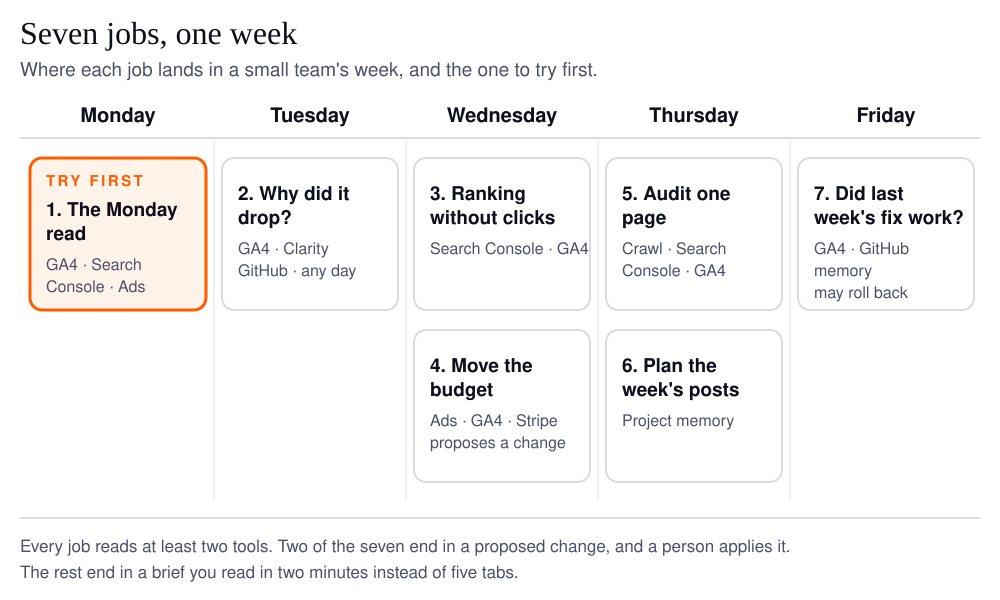
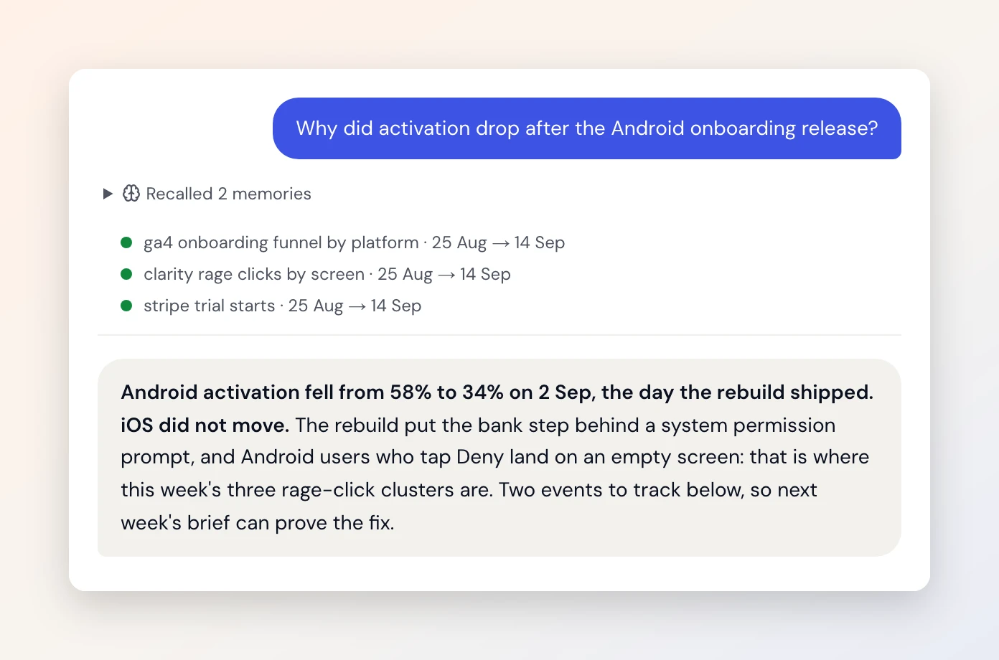
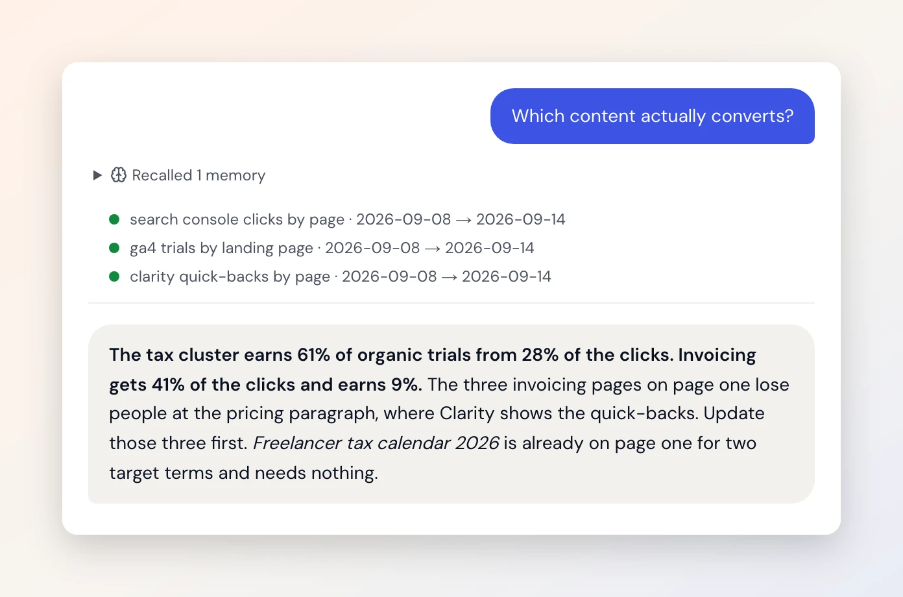
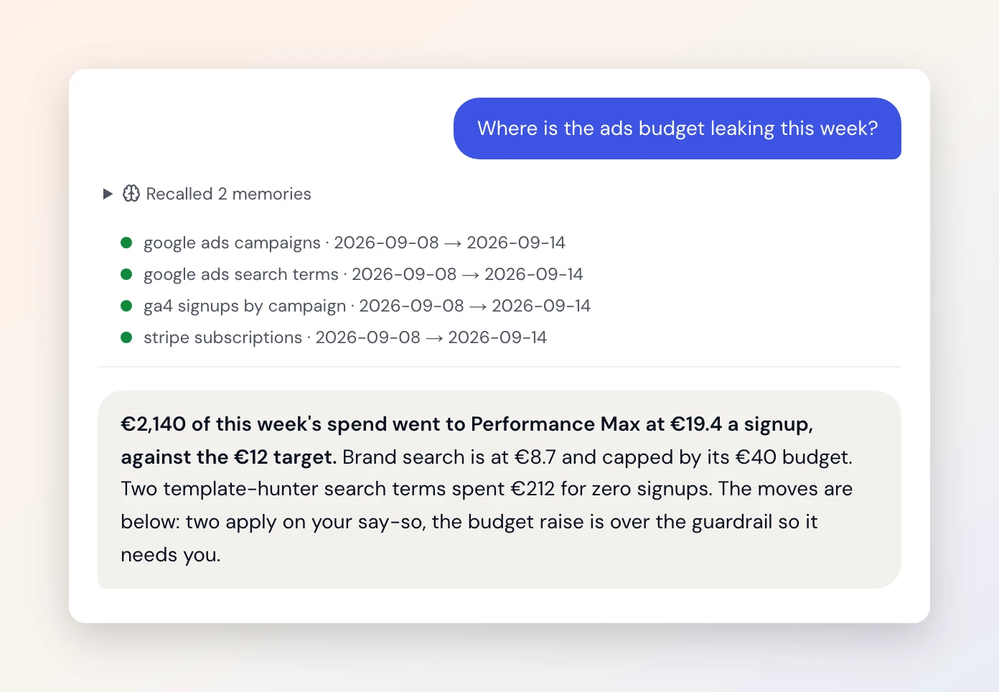
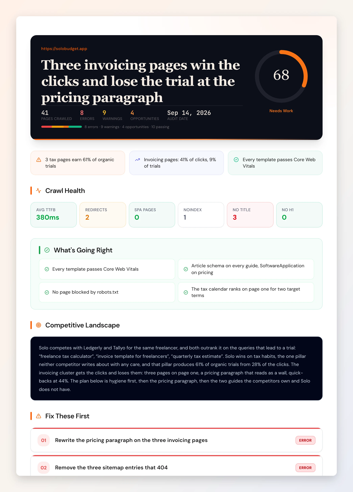

An AI agent for marketing is software that takes a question or a standing job, decides which of your tools to read, reads them together, and hands back an answer, a brief or a proposed change for you to approve. Below are seven jobs one does for a two-person team, with the tools each reads, what comes back, and what it may touch in your accounts.
Every list of AI agent examples I found this month is made of enterprise case studies. Braze's agentic AI examples in marketing has Kayo Sports going from 300 to 1.5 million message variations. Dashly's 11 agentic AI marketing examples has U.S. Bank, Sephora, Coca-Cola and Unilever, which makes content for more than 400 brands. Good examples. None of them is sized for a team where one person runs growth between everything else, which is the team I built Duct for, mostly because I was that person and growth was the part I was bad at.
So here are the jobs at that size. The product shots are from the sample story every Duct screenshot is made from (a fictional budgeting app called Solo), so the numbers in them illustrate the job rather than report a customer.
What counts as an agent example, and what is just automation?
An agent decides its own next step; an automation follows the steps you wrote. Anthropic's Building effective agents draws the line this way: workflows are "systems where LLMs and tools are orchestrated through predefined code paths", while agents are "systems where LLMs dynamically direct their own processes and tool usage". The same post's advice is the one most vendors skip: find "the simplest solution possible, and only increasing complexity when needed".
Dashly's test for the vendor demos is the one I use: "does the system set its own sub-goals, orchestrate multiple tools, and adapt based on results?" Every job below passes it because every job reads at least two tools and chooses what to read next from what it found. If you want the longer version of that test, with the same job done three ways, it is in AI agent vs chatbot vs automation.
What are the seven jobs?
Five reads and two proposals, spread across a working week. The table is the whole post in one screen; the sections after it say what each job looks like when it runs.
| Job | Reads | You get back | May change | Replaces |
|---|---|---|---|---|
| 1. The Monday read | GA4, Search Console, Google Ads live; Stripe, Meta and the rest through a routine brief | one brief: what moved, why, what to do | nothing | the hour in five tabs |
| 2. Why did it drop? | GA4, Microsoft Clarity, GitHub | the day, the platform, the screen, the release that shipped | nothing | a day of guessing |
| 3. Ranking without clicks | Search Console, GA4 | the queries with impressions and no clicks, with the page to retitle | nothing | a spreadsheet export |
| 4. Move the budget | Google Ads, GA4, Stripe | the leak, and a change set waiting for Apply | campaign budget, bids, status, keywords | the Wednesday argument |
| 5. Audit one page | a crawl, Search Console, GA4 | a scored report ranked by traffic at stake | nothing | a tool subscription |
| 6. Plan the week's posts | project memory | a board of posts: planned, drafted, posted | nothing in your accounts | the blank page |
| 7. Did last week's fix work? | GA4, GitHub, memory | the metric lined up against the merge time | a rollback, if you say so | forgetting to check |

1. The Monday read
One brief that reads your tools together, before you open any of them. Google Ads says one number of clicks, GA4 says another number of sessions, and Google's own help page on why Google Ads clicks and Analytics sessions don't match (an older page, still the clearest one) puts the reason plainly: "the process to record a click is straightforward; however, recording a session involves requirements and checkpoints." A person reconciles that every Monday by eye. An agent reads both, says which gap is normal and which is new, and writes the three sentences you would have written at 11am.
In Duct this is the unattended brief: a run with, as the prompt says, "nobody to ask", so where it would have asked a question it states its assumption in the same sentence and carries on. It reads nothing you have not connected, and it applies nothing. The clock is still yours: Duct has the entry point, and nothing in the product schedules it yet.
2. Why did it drop?
The answer names a day, a platform and a screen, because the agent reads the product analytics next to the release history. The question "why did activation drop" has three usual suspects: a release, a tracking change, or a channel shift. An agent that can read GA4's onboarding funnel by platform, Clarity's rage clicks by screen, and GitHub's merged pull requests in the same run can line the drop up against the merge time. The GitHub connector's own catalog entry tells the model to "line a metric change up against merged_at and release times, not commit times", because a merge is not a deploy and a commit is not a merge.

3. Ranking without clicks
The cheapest fix in organic search is a title, and an agent finds the pages that need one. A query with hundreds of impressions and no clicks is a snippet problem, not a ranking problem. Duct ships this as a named integrity check, organic_ctr_gap, in its check library, and the check says so in its own words: "That is a title/snippet problem, not a ranking problem, and it is the cheapest fix in organic search."
I can offer my own site as the example. In getduct.ai's own Search Console for July 24 to October 24, 2026, the post on harness engineering sat at position 7.5 with 80 impressions and no clicks. That is a retitle, not a rewrite, and it is exactly the row this check lists. The content version of the same job, which pages earn trials and which only earn clicks, is in the shot below.

4. Move the budget
The agent proposes the change and shows its evidence. You press Apply. Where the ads budget leaks is a question that needs Google Ads spend, GA4 signups by campaign, and what Stripe settled, read in one window. The answer is a list of moves: pause the search terms that spent and converted nothing, raise the budget on the campaign under its target cost. Each move becomes a staged change with its rollback.
This is the one job most people want and most people are right to be nervous about. Duct can propose eight kinds of Google Ads change, from negative keywords to campaign budget and bidding, and twenty across four tools (the executors). By default every one waits for a person. The agent has no approve tool at all, which is a stronger guarantee than a prompt that says "ask first", and the human in the loop guide is about why.

5. Audit one page
A scored report of one site, ranked by the traffic at stake, with the sources it read listed on it. An SEO audit by an agent is a crawl plus Search Console plus GA4, read together: which clusters sit on page two on pages that already convert, which two pages compete for the same term, which topics both competitors rank for and you have no page for.
One lesson from building it is worth passing on. The model was asked to do the scoring arithmetic itself and did it loosely: a site whose homepage returned no response at all was scored 84, "good". The scores now come from code, and the model's number is overwritten by what its own findings add up to. A number the software can derive is a number the model should not be asked for.

6. Plan the week's posts
A board of posts drawn from what the business already knows, not from a blank prompt. The weakest marketing agent demos are the ones that write ten posts about anything. The useful version starts from project memory (what the product is, who it is for, what the last brief found) and lands a week of posts on a board as planned, drafted and posted. The writing is still yours to edit; the plan is what used to cost the morning.
7. Did last week's fix work?
The job nobody does by hand, because the week moved on. You retitled the page, raised the budget, shipped the onboarding fix. The agent reads the metric again next week, lined up against the merge or the applied change, and says whether it moved. Memory is what makes this possible: Duct keeps a remembered state with the date it was seen, and after a shelf life (seven days for campaigns, fourteen for pages) it re-reads the source before stating the old value as current, per the 0.7.1 changelog. If the change made it worse, the same change set that applied it can roll it back, on your say-so.
Which job should you try first?
The Monday read, because it needs read-only access and tells you in a week whether the agent reads your stack correctly. Connect the tools you already pay for, let it write one brief, and check the brief against the dashboards you would have opened anyway. If the numbers match and the reading is right, move to the drop trace and the ranking check. Leave budget changes for last: not because they are dangerous behind an approval gate, but because you should trust the reading before you trust the proposal. The wider map, which jobs to hand over, which to keep and what one costs to run, is in AI agents for marketing.
The reason the reading jobs come first is the month on a client's Google Ads account that Duct's checks are modeled on, where most of the work went on establishing whether a number could be trusted at all and every serious defect looked healthy on a dashboard. The numbers are in the agent vs chatbot guide, and the retrospective is the first paragraph of checks.py.
Which marketing jobs should you not give an agent yet?
Anything that spends without a gate, anything that needs taste, and any arithmetic the software could do instead. Three limits, two of them Duct's own.
- Arithmetic. Replaying a real brief, the model reasoned correctly and then added wrong: 2,504 sessions where its rows summed to 2,681. Totals, rates and subtotals are now computed in code and handed to the model. Ask any agent vendor where their totals come from.
- Coverage. Duct connects thirteen tools, listed on the integrations page. The chat agent fetches six of them live today (GA4, Search Console, Google Ads, Clarity, GrowthBook, GitHub). Stripe, RevenueCat, Meta, Apple Search Ads, ChatGPT Ads and Mixpanel reach the chat through routine briefs and memory, not a live read. HubSpot is still a placeholder. I would rather tell you than have you find out on a Tuesday.
- Creative judgment. The content job plans and drafts; whether a post is good is still a person's call, and I have not found an agent I would let publish without one.
FAQ
What can an AI agent do for marketing?
Read several tools together and answer the questions none of them answers alone: why a metric moved, where a budget leaks, which pages rank without clicks, whether last week's change worked. It writes briefs, runs checks and proposes changes. Whether it applies a change is a decision you keep, and the best agents make that a rule in code rather than a prompt.
Can an AI agent read GA4 and Google Ads together?
Yes, and that is the whole point of one. Google Ads counts clicks and Analytics counts sessions, and the two never match exactly. An agent with both connected reads them in one window, says which gap is normal and which is new, and names the campaign. In Duct both are live reads in chat and in unattended runs.
What does a marketing AI agent produce?
Three things: a brief (a short document that says what moved, why, and what to do), a check result (a named question answered with evidence, or skipped visibly when the data is not connected), and a change set (a proposed change with its rollback, waiting for approval). Dashboards produce charts; an agent produces sentences you can act on.
Does a marketing agent need write access to my accounts?
Not for the reading jobs, which are five of the seven here. Read access everywhere is enough for briefs, checks and audits. Write access is only needed for the proposal jobs, and even then a good agent stages the change and waits for a person. If a vendor asks for write access on day one, ask what for.
How is an AI agent different from a dashboard?
A dashboard shows every number in the same font and leaves the reading to you. An agent reads across tools, says which numbers can be trusted, and writes the conclusion. The first job on any real account is deciding whether a number can be trusted at all, and a dashboard cannot do that step.